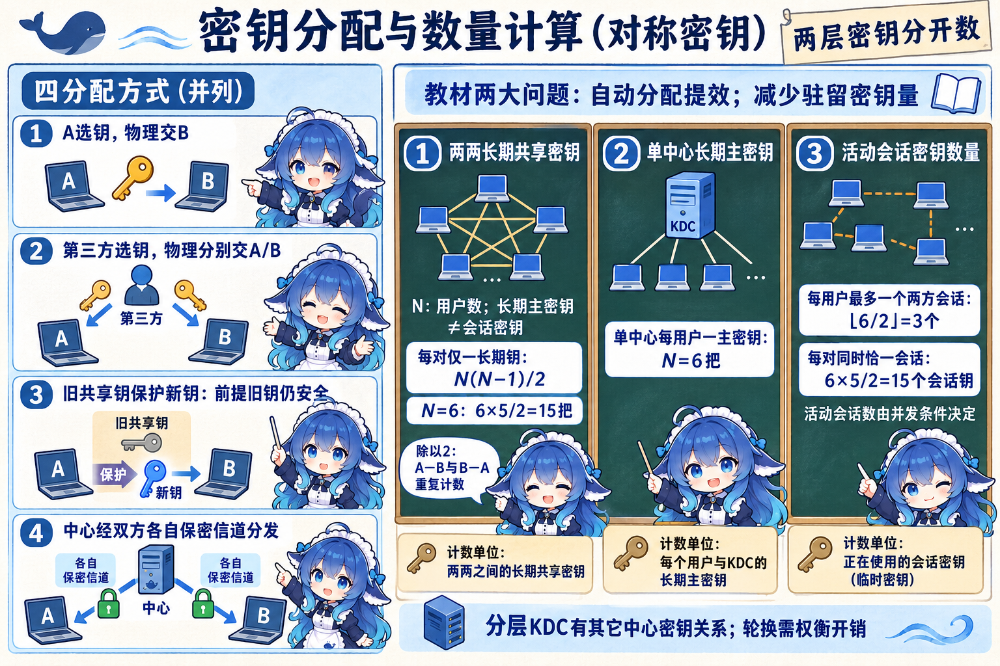
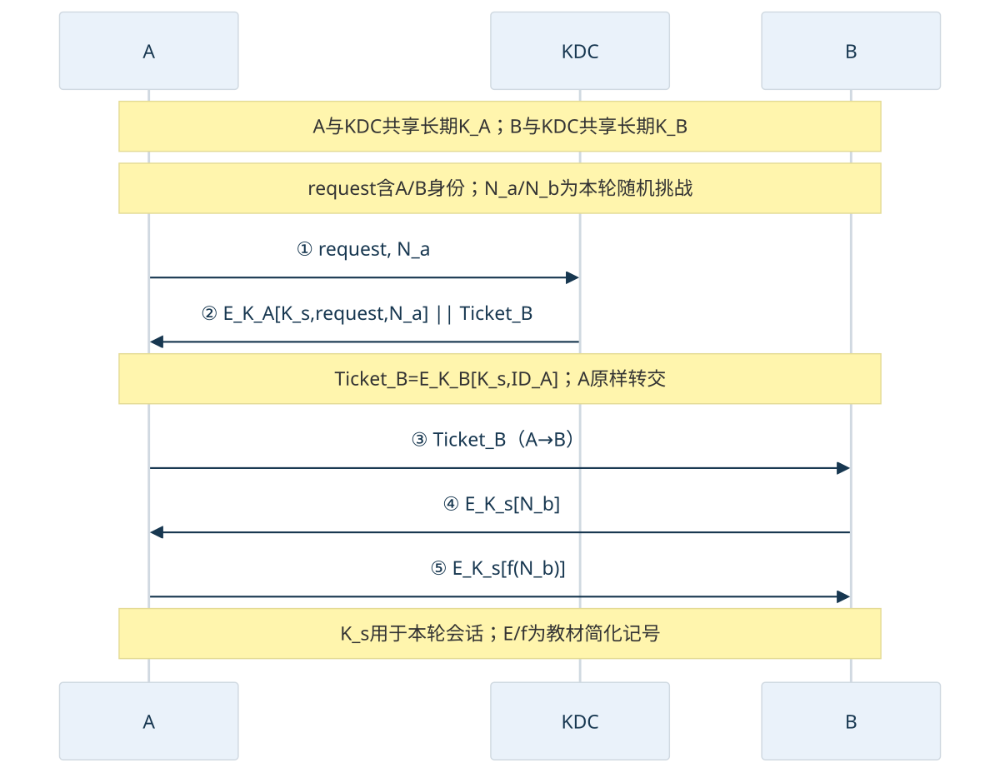
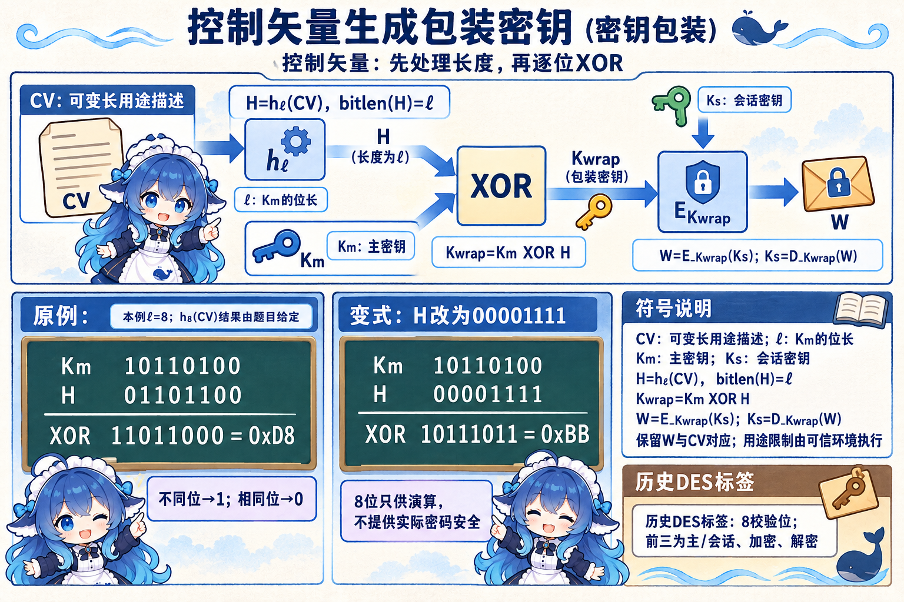
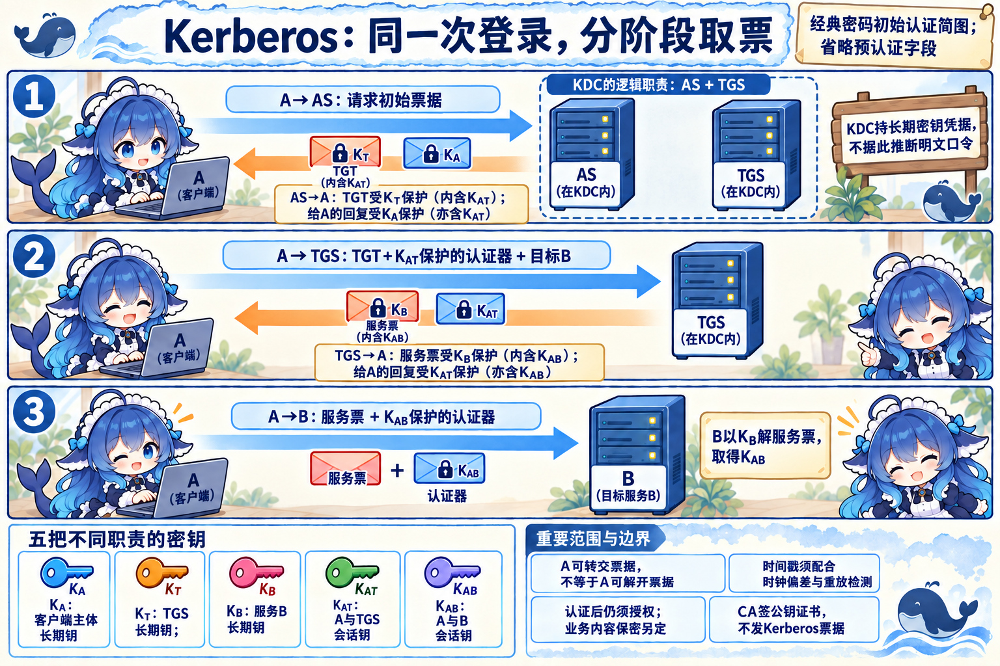
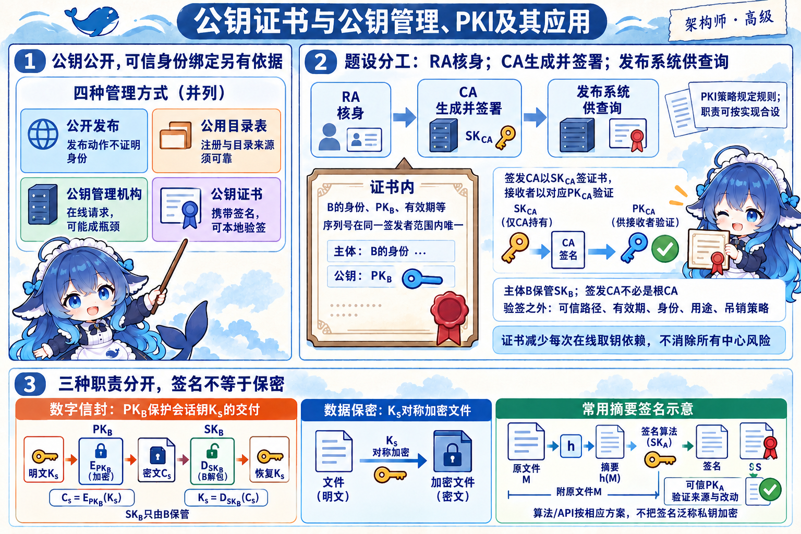
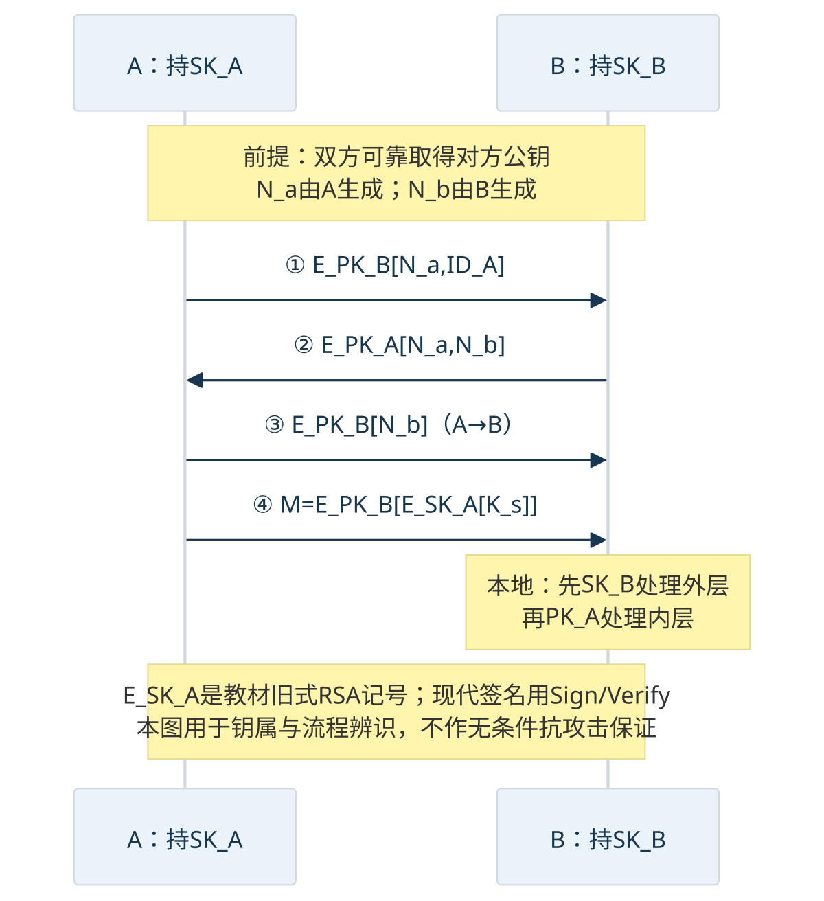

4.5.1 对称密钥：谁保管，怎样分配
六个站点要相互传送检测文件。若每一对站点长期保管一把不同的共享密钥，站点增多时，人工登记和更新的工作也随之增加。教材把密钥分配的两个主要问题归结为引入自动分配提高效率、尽量减少系统中驻留的密钥量。传输保密、备份和强度仍有价值，但不能替换这道教材定义题的两个答案。
先分清两层钥匙。长期主密钥用于保护密钥分发或其他密钥；会话密钥用于某次通信的数据保护。教材的简单 KDC 模型让每个用户与中心共享一把长期主密钥，再按需要给通信双方分配会话密钥。会话结束销毁是本模型的做法；密钥保留和轮换要结合实际用途，不能把“任何会话密钥都绝不驻留”推广为通用结论。
| 教材四种分配方式 | 已有条件 | 要读懂的差别 |
|---|---|---|
| A 选择密钥，物理交给 B | 可靠的人工交付 | 两方直接建立共享秘密 |
| 第三方选择，物理分别交给 A、B | 双方信任第三方交付 | 仍是人工发送 |
| 已有共享密钥保护新密钥 | 旧密钥仍安全 | 若攻击者掌握旧密钥并取得相应更新报文，可能沿更新链得到新密钥；不是所有现代更新方案的共同性质 |
| 第三方经各自保密信道分发 | A、B 各与中心有共享主密钥 | 中心可自动分配会话密钥；用户无需为每个伙伴长期保存一把不同主密钥 |
完整演算：长期钥匙数和活动会话数
先确定数的是什么
N 是用户数；此处每对用户只设一把不同的长期共享密钥。无中心时，N 个用户各有 N−1 个伙伴，但 A—B 和 B—A 计了两次，所以除以 2。KDC 简单模型只计算用户—中心的长期主密钥，中心内部、跨中心的钥匙不在这个 N 中。
同一个 6 人系统可以是 6 把长期主密钥、3 个活动会话密钥，也可以有 15 个活动会话密钥。这些数不矛盾。若同一对用户可同时开多个会话，活动密钥数甚至不受“每对仅一会话”的 15 所限制。


改变参数：N=10
先尝试计算每对一把长期钥、KDC 长期主密钥，以及“每用户只参加一个两方会话”时的最大活动会话数。
展开完整答案与条件
题目若只说“同时通信”，没有给并发模型，就不能直接认定会话密钥数等于 N 或 N(N−1)/2。
票据由谁送给谁
设 A 与 KDC 共享 KA，B 与 KDC 共享 KB，本轮新会话密钥为 Ks。中心把 B 的票据 TicketB=EK_B[Ks,IDA] 交给 A，A 再原样转交 B。A 没有 KB，不需要解开这张票据；它从自己受 KA 保护的部分得到 Ks。Na、Nb 是本轮随机挑战，和上文“用户数 N”不同。


原图 4-4 第③步实际画的是 A→B，Markdown 转录说明误写 KDC→B。本册按原图和转交票据的语义重绘；源文件保持只读。图中的 E/f 是教材简化协议记号，用来辨认钥属和消息路线，不是可以照抄部署的完整协议。
无中心的图 4-3 则由 A 发 request 与随机挑战，B 用已有共享主密钥保护“新会话密钥、请求、身份与挑战回复”，A 再用新会话密钥回复 B 的挑战。它不需要 KDC，但依赖双方已经有可靠的共享主密钥。多地域可采用本地 KDC 与上层 KDC；跨中心关系会增加其他长期密钥，不能把简单单中心的 N 套到整个层级。较短会话有效期缩小某些暴露窗口，也增加重新分发的负担，应权衡更新频率、协议和业务，而不承诺越频繁就一定越安全。
控制矢量：先处理长度，再异或
钥匙的用途也需要控制。教材的历史 DES 密钥标签借用 8 个校验位，前三位分别标记主／会话密钥、加密、解密。这里是教材给出的用途定义，未规定统一的 0/1 编码。标签空间有限；控制矢量 CV 可用不同字段说明允许的用途，长度可变。
可变长度的 CV 不能直接与固定长度主密钥做逐位 XOR。先用教材的杂凑处理得到与 Km 同长的 H，再构造包装密钥。把 hℓ 定义为本例指定的 ℓ 位输出处理；实际实现必须明确摘要选择和长度转换，不能把任意 hash 输出当成自然等长。
Km 是主密钥，Ks 是会话密钥，Kwrap 是本次保护 Ks 的包装密钥，W 才是包装后的密文。教材转录的 EKm XOR H[KS] 括号难读，本册以上标／下标关系重写。接收方保留 W 与 CV 的对应关系，用相同长度处理和主密钥恢复；真正的用途限制还要由可信的密钥操作环境执行，不能只贴一张权限标签就宣称杜绝越权。
8 位演算示例，已给定杂凑结果
只练习长度和 XOR。设 ℓ=8，Km=10110100，题目给出 h₈(CV)=01101100；这里不假装计算了一个未定义的真实杂凑算法。8 位参数不具有实际密码安全性。


改变 CV：新 H=00001111
展开演算
若题目把 CV 改为 12 位字符串，仍须先求指定的 8 位 H；不能截掉 CV 四位就声称完成教材的杂凑步骤。杂凑碰撞、篡改和用途执行仍有其机制条件，XOR 不是独立的万能权限保证。
连接：Kerberos 把中心分成两种服务
用户登录后要连续访问文件、报表两个服务。经典 Kerberos 把 KDC 的逻辑职责分为 AS 发初始 TGT 和 TGS 发目标服务票据。TGT 是给 TGS 阅读的票据，服务票据是给目标服务阅读的票据；客户端同时取得相应的会话密钥，才可生成证明本轮身份的认证器。


本图是密码初始认证的简化场景：KA 为客户端主体的长期密钥，KT 为 TGS 的长期密钥，KB 为目标服务 B 的长期密钥；它们的相应凭据由 KDC 持有。KAT、KAB 是不同阶段的会话密钥。TGT 内含 KAT，TGS 用 KT 处理 TGT 后取得它，才能核认证器；服务票内含 KAB。客户端能解自己的回复部分，不能因为“拿到 TGT”就解开 TGT；服务 B 用 KB 解服务票据，再取得 KAB。
“KDC 保管用户的长期密钥凭据”不能改写成“KDC 必须存明文密码”。典型密码方式从口令导出长期密钥，服务也可在 keytab 中保存密钥凭据；Kerberos 还有其他初始认证方式。2020 下半年 Q65 的 C 项“保存账号和密码”应按旧题的凭据简写理解，B 项把票据中心换成 CA 才是该题明确的错项。不是凭这道题给明文密码存储背书。
时间戳提供新鲜性线索，还须配合允许的时钟偏差、重放缓存或相应协议机制。NTP 是可用的校时方式，不是 Kerberos 唯一法定依赖；默认偏差也不能变成所有部署的固定常数。KDC 暂时不可用通常影响获取新票据，有效的既有票据可能继续使用。身份认证之后，服务仍按权限策略决定可访问什么；应用数据是否加密另看所用协议。CA 不负责发 Kerberos 票据；使用证书参与某种初始认证也不改变 AS/TGS 的发票职责。
4.5.2 公钥管理：公开不等于可信绑定
A 要把会话密钥加密给 B，先得知道眼前的公钥真的属于 B。公钥可以公开，身份绑定却需要可信依据。教材四种方法围绕这个问题展开。
| 方式 | 做法与主要条件 | 教材关注的问题 |
|---|---|---|
| 公开发布 | 本人发送、广播或张贴公钥 | 冒充 B 的人也能发布自己的钥；发布动作本身不证明身份 |
| 公用目录表 | 可信管理员登记、维护、发布动态目录 | 注册和目录来源要可靠；管理员凭据或目录被破坏会影响绑定可信性 |
| 公钥管理机构 | 在线请求对方公钥，可靠地验证机构保护的回复 | 通信建立依赖在线机构，可能形成瓶颈；机构公钥也要事先可靠取得 |
| 公钥证书 | 签发者对身份、公钥及相关字段签名，证书可随通信交付 | 可在本地验签，减少每次向在线机构取公钥的依赖；信任与有效性仍须验证 |


签名验证是证书信任验证的一步
证书的主体公钥属于持有人；证书上的签名来自签发 CA 的私钥，接收者用签发者的对应公钥验证。中间 CA 可以签发证书，所以不能把每个签发者都叫根 CA。证书一般公开交付，CA 的签名不把证书或所有业务数据自动加密。
验签成功说明相应签名和数据一致，还要建立到可信锚的证书路径，检查有效期、目标身份、用途和适用的吊销策略。证书序列号通常在同一签发者范围内唯一。旧题“验证 CA 签名确认网站真伪”是在省略其他前提的考法；2021 Q67–68 中确认的是网站身份，不能据此推出已认证登录用户、授予用户权限或完成双向认证。
在题目所给的分工架构中，RA 受理申请并核验申请者身份，CA 生成和签署证书，发布系统供查询证书和状态信息，PKI 策略规定规则。规则文件不代替执行核验的实体。RA 与 CA 是职责区分，实际实现可以兼任或合设，不能推成“CA 在任何系统里都不参与身份核验”。普通自管私钥场景中，主体保管自己的私钥，CA 用自己的签发私钥；密钥托管等特殊服务需按其明确约定讨论。
4.5.3 公钥分配会话密钥
对大量文件逐块做公钥运算成本较高。常用混合方式由对称会话密钥 Ks 保护数据，再用接收者的公钥保护 Ks 的交付。数字信封主要解决保密交付；需要来源认证时再使用签名或经过认证的协议，不能把“用了数字信封”直接当成不可否认性。


原图 4-5 第③步画 B→A，但正文说明 A 将 B 的新随机数 N₂ 用 PK_B 加密返回 B。本册按消息的产生方、接收方和密钥语义画 A→B，并记录原图／正文冲突。两方已可靠取得对方公钥是图的前提。
第④步保留教材旧式 RSA 记号 M=EPK_B[ESK_A[Ks]]。B 先用 SKB 去外层，再按 A 的公钥处理内层。外层对应保密，内层意图对应来源认证。现代签名用 Sign/Verify 定义和适当编码，不能把所有签名都叫“私钥加密”，也不能把裸指数运算当现代安全协议。随机挑战交换说明新鲜性与响应关系；完整身份绑定、上下文及协议设计仍影响抗攻击能力，本册不沿用原文对所有主动攻击的无条件保证。
可以用同一份上传报告串起职责：KDC 发放共享密钥；CA 签发公钥证书，RA 核验申请身份；数字信封把内容钥交给接收方；作者签名给出可验证的来源与改动检测。权限控制则决定接收者是否被允许读报告，在 4.6 继续。